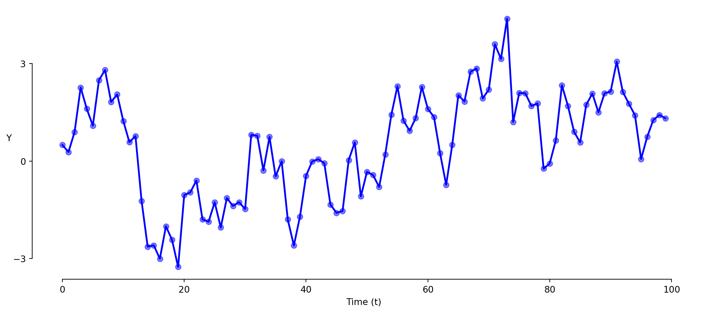
The economist’s data analysis pipeline.
Modeling relationships through time
Key Questions:
Data related in time has a special problem of autocorrelation.
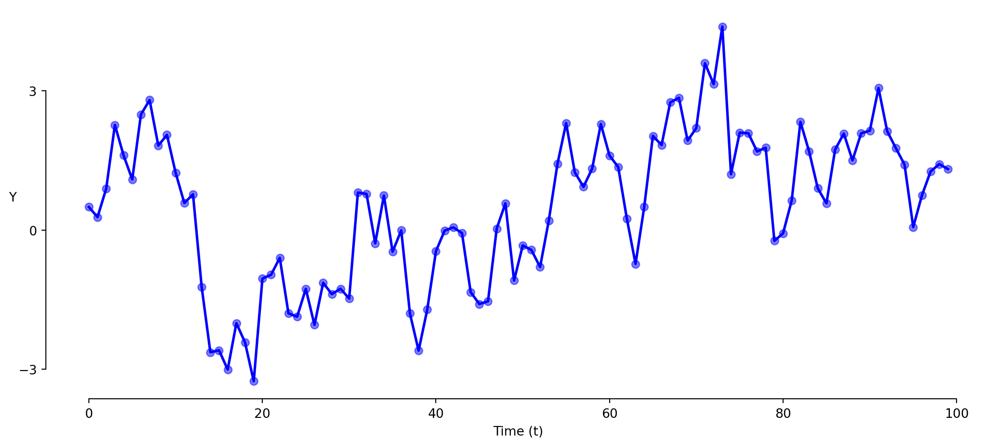
> observations are related to their past values (serial correlation; autocorrelation)
Values in time series are typically related to their own past values.
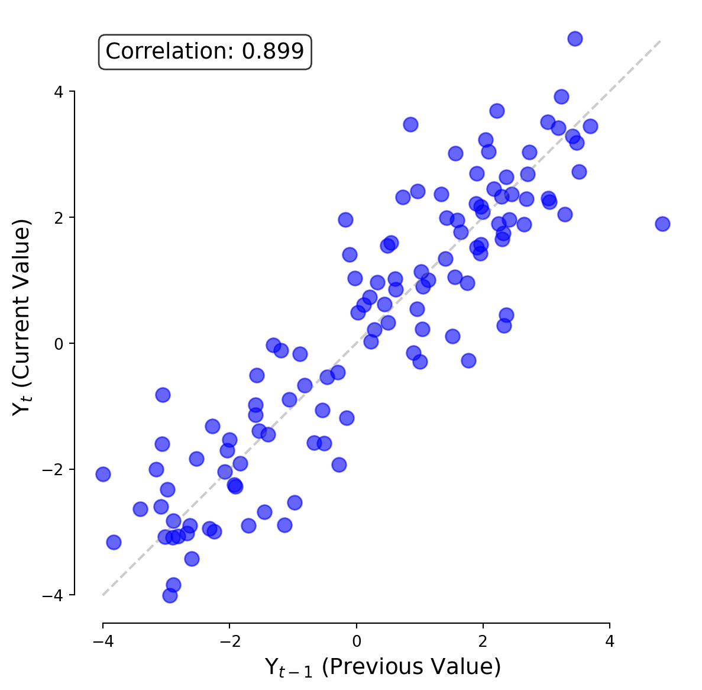
The standard approach has problems with time series.
\[\text{Y} = \beta_0 + \beta_1 \times \text{t} + \varepsilon\]
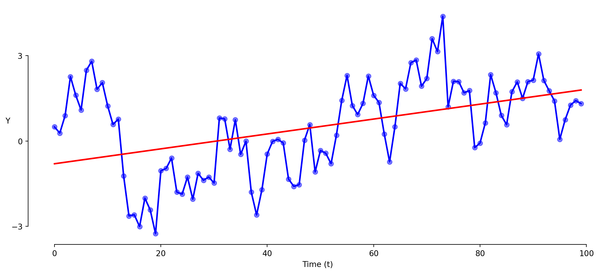
The confidence level of regression requres that the error terms are independent.
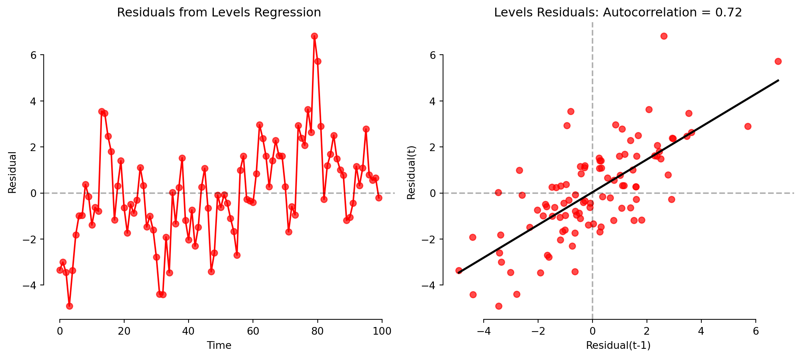
> levels regression shows strong patterns in residuals (autocorrelation)
The standard approach has problems with time series.
\[\text{Y} = \beta_0 + \beta_1 \times \text{t} + \varepsilon\]
> common trends can create spurious correlations
> error terms are serially correlated, violating regression assumptions
> potentially misleading significance levels due to violated assumptions
> differencing substantially reduces the autocorrelation problem
Focusing on changes rather than levels: \(\Delta \text{Y}_t = \text{Y}_t - \text{Y}_{t-1}\)
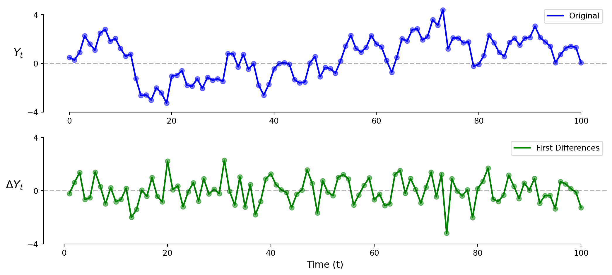
> differences (correctly in this case) shows no relationship
> what would the first differences look like if there was a positive trend?
Focusing on changes rather than levels: \(\Delta \text{Y}_t = \text{Y}_t - \text{Y}_{t-1}\)
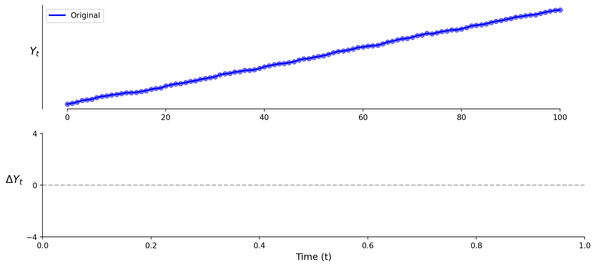
Focusing on changes rather than levels: \(\Delta \text{Y}_t = \text{Y}_t - \text{Y}_{t-1}\)
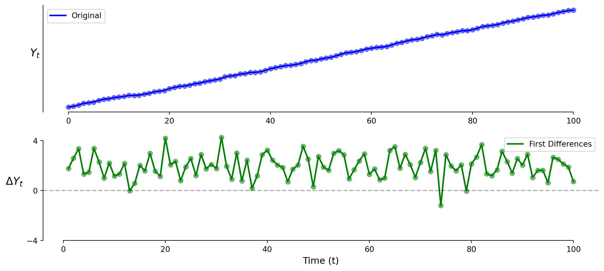
> the vertical intercept is positive!
> differences (correctly in this case) shows the relationship as an intercept
The problem of autocorrelated residuals.
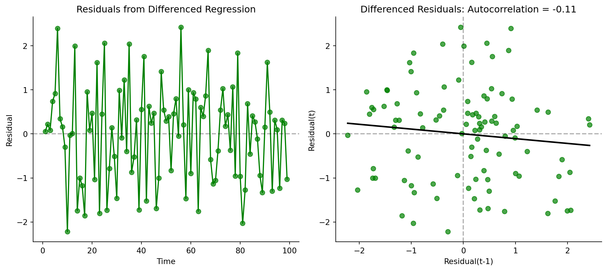
> differencing substantially reduces the autocorrelation problem
Implementing a first differences regression
# 1. Create first differences variables
data['gdp_diff'] = data['gdp'].diff()
data['unemployment_diff'] = data['unemployment'].diff()
# 2. Drop the first row which has NaN due to differencing
data = data.dropna()
# 3. Fit the differences model
model2 = smf.ols('gdp_diff ~ unemployment_diff', data=data).fit()
print(model2.summary().tables[1])Relating changes in X to changes in Y through time (t).
> we can also relate two time series variables \(X\) and \(Y\) using differences
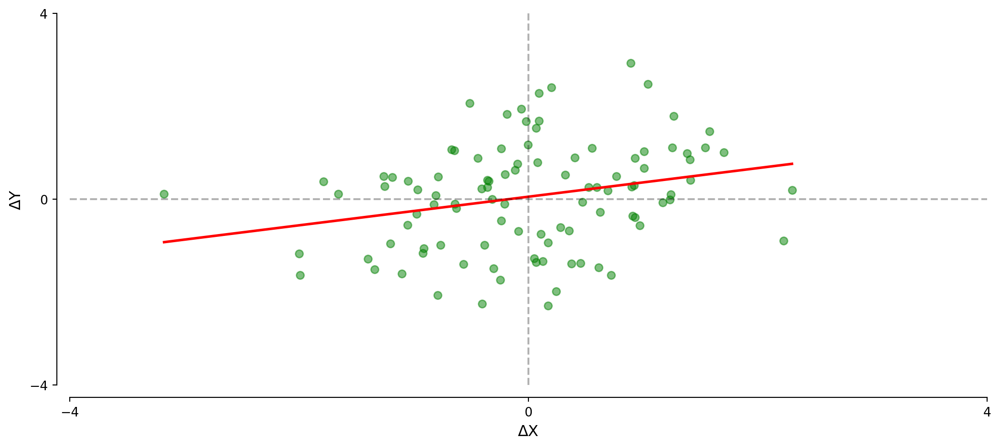
\[\Delta \text{Y}_t = \beta_0 + \beta_1 \times \Delta \text{X}_t + \varepsilon_t\]
Relating changes in X to changes in Y.
\[\Delta \text{Y}_t = \beta_0 + \beta_1 \times \Delta \text{X}_t + \varepsilon_t\]
> removes trends that could cause spurious correlations
> reduces serial correlation in the error terms
> \(\beta_0\) captures time trend in \(Y\)
> clear interpretation: how do changes in X relate to changes in Y?
> \(\beta_1\) captures the short-term relationship between variables
Implementing a first differences regression
# Create first differences variables
data['gdp_diff'] = df['gdp'].diff()
df['unemployment_diff'] = df['unemployment'].diff()
# Drop the first row which has NaN due to differencing
data = data.dropna()
# Fit the differences model
model3 = smf.ols('gdp_diff ~ unemployment_diff', data=data).fit()
print(model3.summary())> β₁ now represents the short-term impact of changes in X on changes in Y
Proportional changes provide interpretable coefficients: \(g_Y = \frac{\text{Y}_t - \text{Y}_{t-1}}{\text{Y}_{t-1}} = \frac{\Delta \text{Y}_t}{\text{Y}_{t-1}}\)
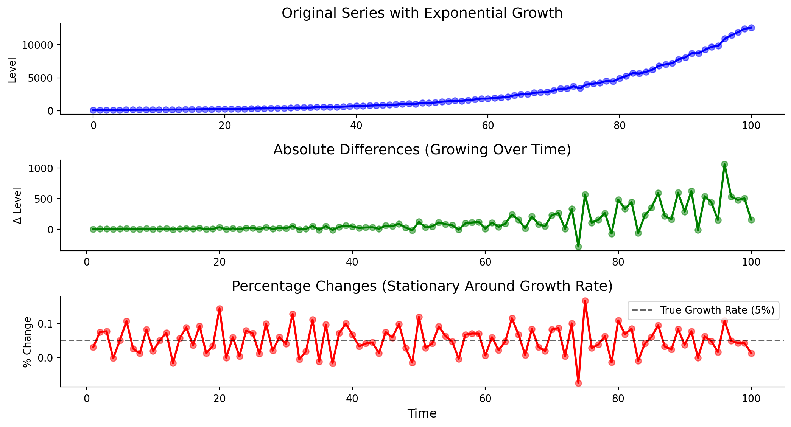
Relating growth in X to growth in Y.
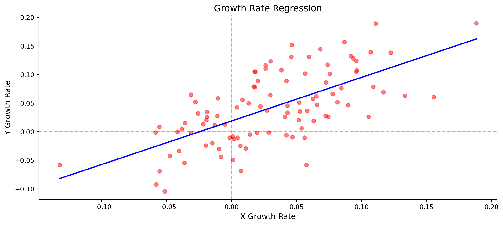
\[g_Y = \beta_0 + \beta_1 \times g_X + \varepsilon_t\]
Relating growth in X to growth in Y.
\[g_Y = \beta_0 + \beta_1 \times g_X + \varepsilon_t\]
> advantages of first differences plus better scale properties
> natural for variables with exponential growth
> \(\beta_0\) is Y’s baseline growth rate
> \(\beta_1\) is how Y’s growth responds to a 1 percentage point increase in X’s growth
Implementing a growth rates regression
# Calculate growth rates (percentage changes)
data['gdp_growth'] = data['gdp'].pct_change() # in percentage points
data['unemployment_growth'] = data['unemployment'].pct_change()
# Drop rows with NaN values
data = data.dropna()
# Fit the growth rate model
model4 = smf.ols('gdp_growth ~ unemployment_growth', data=data).fit()
print(model4.summary())> \(\beta_1\) is now expressed in percentage point terms
> easier to interpret for policy-relevant questions
Many economic variables follow seasonal patterns.
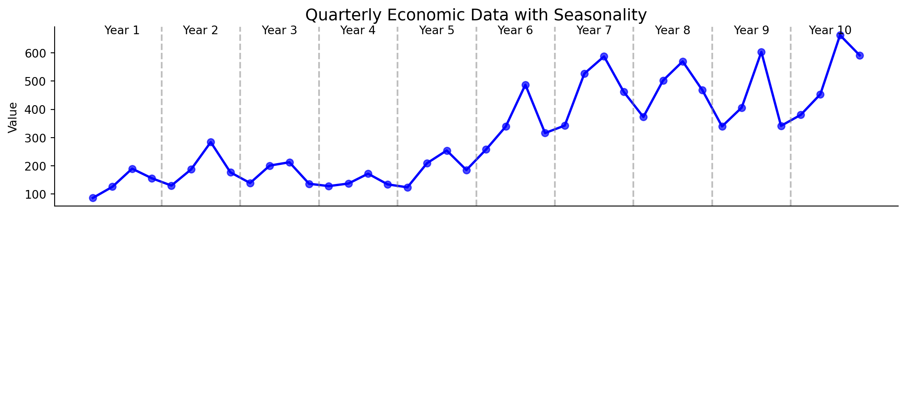
Many economic variables follow seasonal patterns.
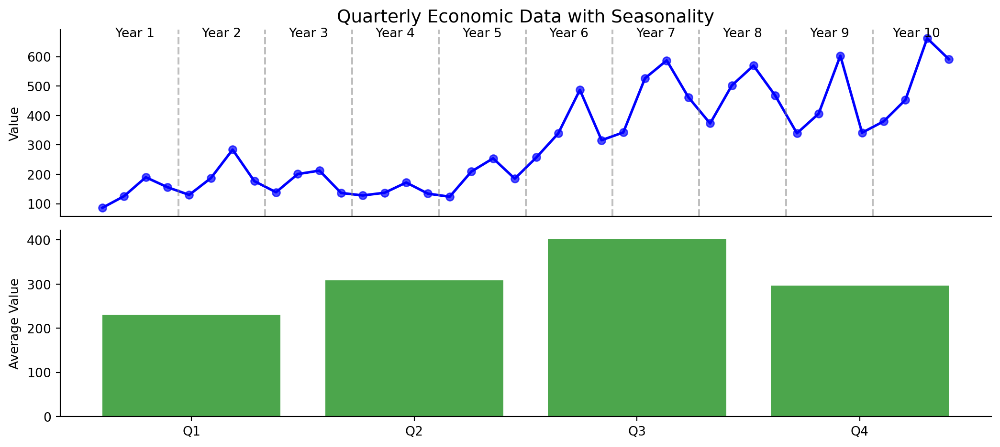
> there are regular spikes in Q3!
> but there is also an increase over time
We can remove seasonal patterns to see the trend more clearly.
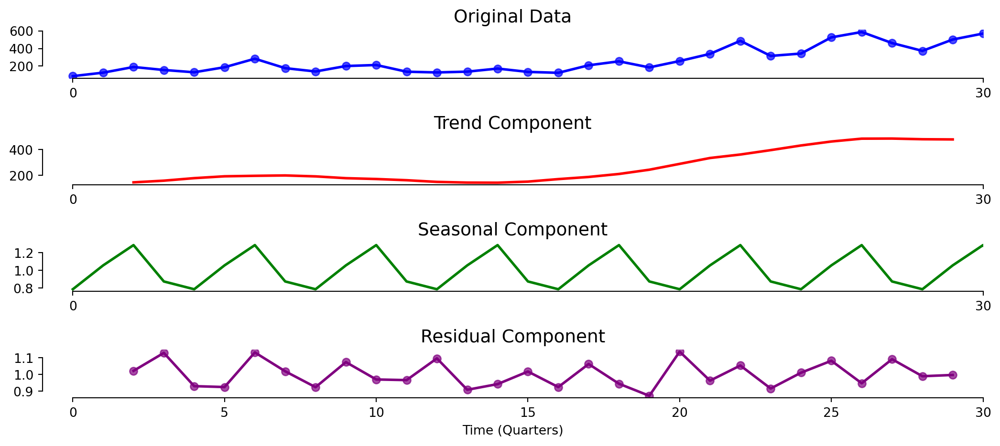
> seasonal decomposition separates trend, seasonal, and residual components
Using seasonal dummies to adjust for quarterly patterns.
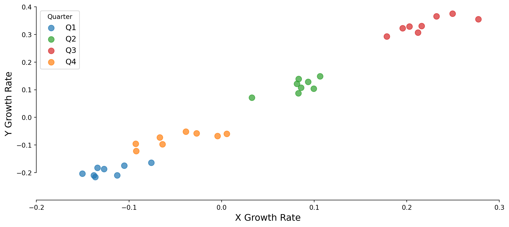
Using seasonal dummies to adjust for quarterly patterns.
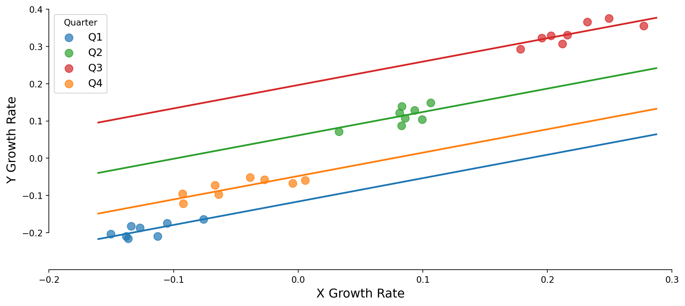
Using seasonal dummies to adjust for quarterly patterns.
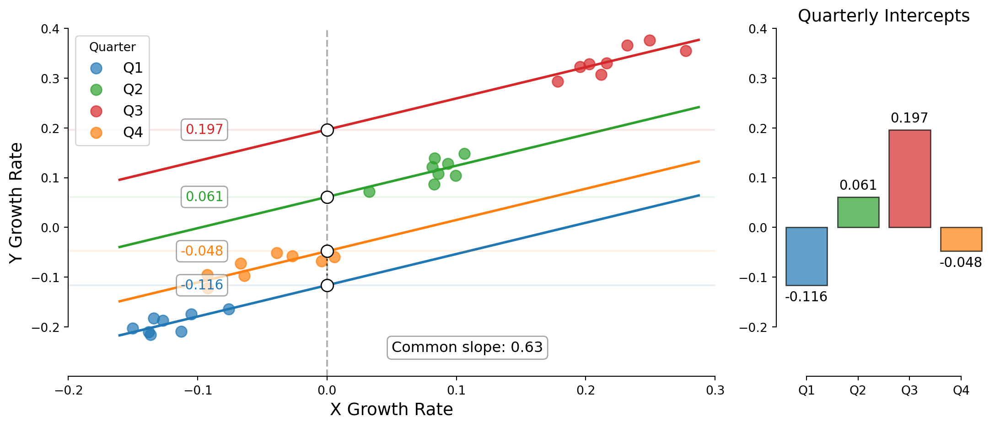
> using these fixed effects deseasonalizes the data
> the slope captures the trend consistent across quarters
Deseasonalizing data through regression.
# Run regression with seasonal dummies using C() notation
model5 = smf.ols('gdp_growth ~ unemployment_growth + C(quarter)', data=data).fit()> deseasonalized data removes the average effect of each season
> relationship between variables is now clearer without seasonal distortions
Best practices for time series analysis in economics.
> time series analysis requires special care but yields valuable economic insights